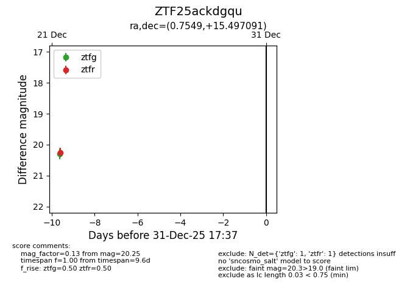
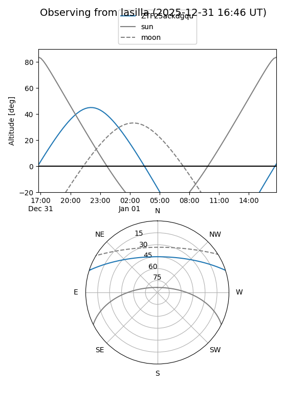
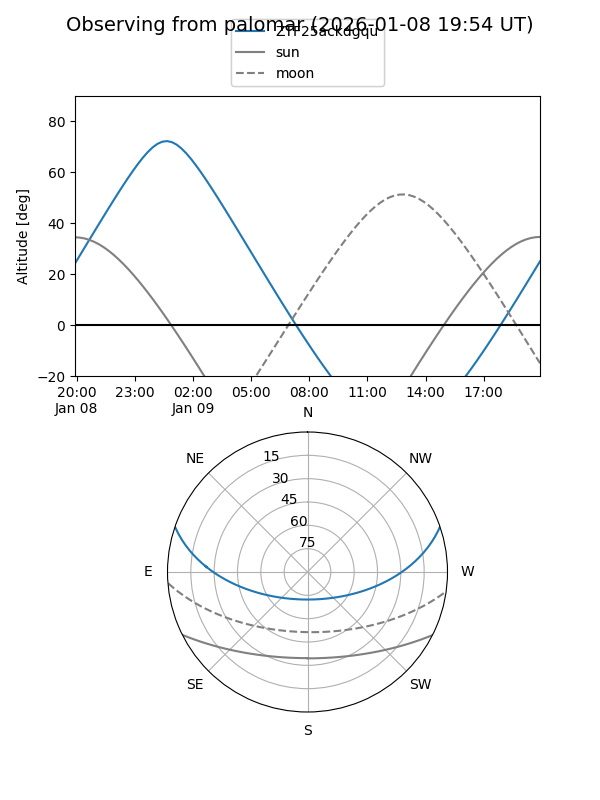

ZTF25ackdgqu
Target ZTF25ackdgqu at 2025-12-22 14:21
Aliases and brokers:
FINK: fink-portal.org/ZTF25ackdgqu
Lasair: lasair-ztf.lsst.ac.uk/objects/ZTF25ackdgqu
ALeRCE: alerce.online/object/ZTF25ackdgqu
alt names
ZTF25ackdgqu (ztf,fink_ztf)
Coordinates:
equatorial (ra, dec) = 0.7549,+15.49709
equatorial (HMS+DMS) = 00:03:01.18,+15:29:49.53
galactic (l, b) = (106.0876,-45.78512)
Flags:
Photometry:
last ztfg=20.29
1 ztfg detections
Lightcurve

Visibility


Additional plots